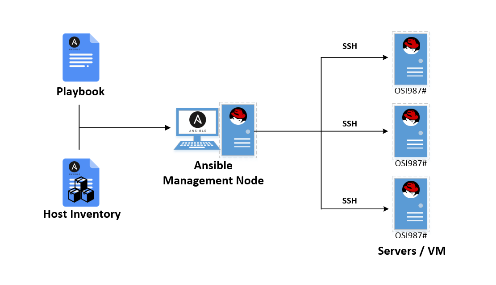
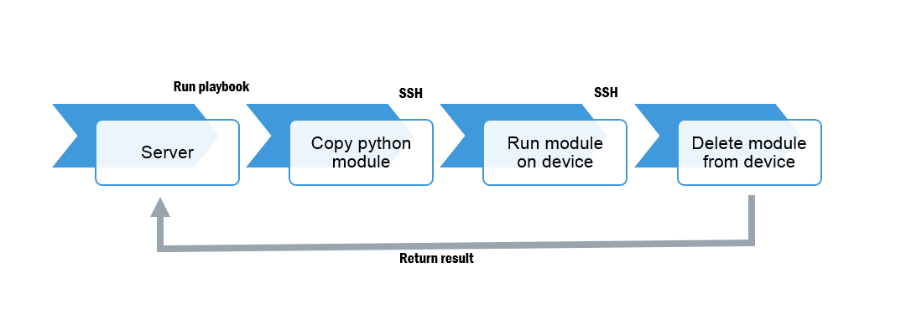

[ ANSIBLE ]
Introduction to Ansible
Created by
Sheikh
/
@sheikhpingu76
Are you
ready?...
let's
start
Ansible
a tool for automation of * application deployment * configuration management * cloud provisioning * ad-hoc task-execution * multinode orchestration
* open source * [www.ansible.com](https://www.ansible.com) * current version: 2.7.7.0 * maintained by [Red Hat](https://www.redhat.com)
## Differences to Puppet * no master server * no agents * push vs. pull
## All you need is * a control machine * some target servers * a little knowledge
## Control machine (typically the users workstation) * Linux * Python 2/3 * SSH client * and Ansible Ansible is available via Pip, Yum, Apt, tar.gz ... or as Docker Image `ansible/ansible` on DockerHub
## target servers * Linux * SSH * Python 2.6 * Windows * Powershell
## Useful knowledge * YAML * General linux knowledge * It's easy to learn
## Ansible offers * Idempotent execution ! * Lots of modules * Linux administration * VMWare ESX * Docker * ...
## Ansible offers * Authentication via SSH Key, Password * Privilege escalation (sudo) * Template engine Jinja2 * Vault for storing secrets
## How does it work * connects using SSH to remote * Setup phase --> Fact gathering * copy generated python code * execute code
## Architechture <section>  </section> * remote * gathering * code * code
Flow

## Flow <section> </section>
## How to use 1. Ad-Hoc commands 2. Playbooks
## Ad-Hoc quick & dirty from the command line ```bash $ ansible my-server -m setup $ ansible my-server -a "uname -a" $ ansible my-server [-m command] -a "/sbin/reboot" ```
## Playbooks * Playbooks are code * typically stored in SCM ```bash $ ansible-playbook my-playbook.yml $ ansibla-playbook -i inventories/my-site.ini my-playbook.yml ```
## Elements * Inventory * Task * Playbook * Role * Variable
## Inventory * Contains host groups * Variables per host or host group * Wildcards for server names * Inventory scripts / plugins
## Task * Specifies what to to * Module + parameters * Options * Conditions * Loops
## Playbook * Contains plays * specifies targets (host groups) * contains tasks * can include roles
## Role * Reusable * Contains tasks * Can include other roles * Defines default variables
## Variable Can be defined in * Role * Playbook * Inventory * Command Line * [Variable precedence](http://docs.ansible.com/ansible/latest/playbooks_variables.html#variable-precedence-where-should-i-put-a-variable) list contains 21 entries
#### Ansible Tower commercial web based UI for Ansible #### Ansible Galaxy Online repository for sharing roles #### GITHUB github by [sheikh76](https://github.com/sheikh76) #### YouTube YouTube by [sheikh76](https://youtu.be/i8dxsC6qaF8)
<h1>THE END</h1> <p> - <a href="http://www.google.com">Sample</a> <br> - <a href="http://www.google.com">Source code & documentation</a> </p>
øresome!